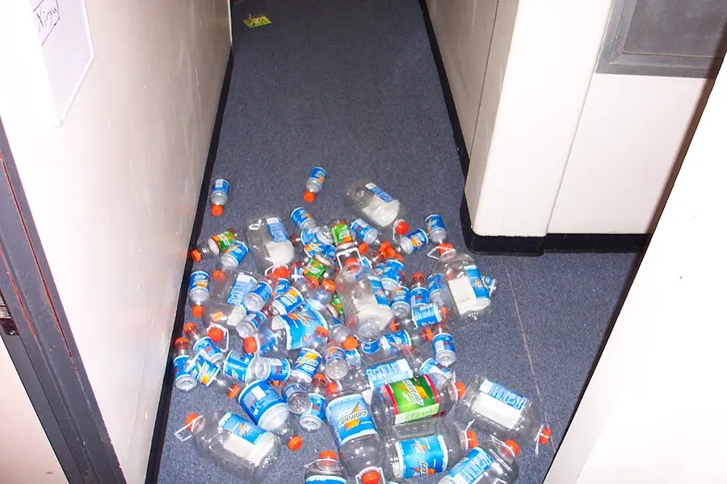

게토레이 Gatorade
게토레이(Gatorade)는 1965년 플로리다 대학교 의료진이 학교 미식축구 팀을 위해 만든 탄산 없는 스포츠 드링크이며, 펩시코가 모기업인 미국 브랜드이다.
최종 업데이트

게토레이는 어떤 브랜드인가
게토레이는 탄산이 없는 스포츠 드링크이다. 원래 운동 선수들을 위해 고안되었으나 지금은 간편히 사 먹을 수 있는 음료로 자리잡았다.
특히 따뜻한 날씨에 에어로빅 운동을 하는 동안 탄수화물과 전해질(나트륨, 칼륨 염분)을 재수화하고 보충하기 위해 만들어졌다. 펩시코의 부서인 퀘이커 오츠를 통해 Stokely-Van Camp사가 시장에 내놓았으며, 본사는 시카고이다.
대한민국에서는 1987년 제일제당이 도입해 생산, 판매를 시작했고 2020년부터 한국펩시콜라가 판매한다.
게토레이는 어떻게 시작되고 성장했나
게토레이의 브랜드 아이덴티티는 무엇인가
플로리다 대학교 미식축구 팀을 위해 개발된 데서 출발한 스포츠 드링크로, 탄수화물과 전해질 보충을 목적으로 만들어진 탄산 없는 음료이다.
게토레이의 대표 제품과 서비스는 무엇인가
게토레이는 지금 어떤 상태인가
게토레이는 펩시코의 부서인 퀘이커 오츠를 통해 시장에 나와 있으며, 본사는 시카고이다. 대한민국에서는 2020년부터 한국펩시콜라가 판매한다.
현재 판매 중인 제품은 그린애플, 런(run), 레몬, 블루 볼트, 오렌지, 화이트 스플래시이며, 여러 제품이 판매 중단되었다. 운동 선수용을 넘어 간편히 사 먹는 음료로 자리잡았다.
게토레이 로고는 어떻게 변해왔나
시기는 위키데이터 로고 기간 또는 위키미디어 커먼즈 파일 정보 기준입니다. 이미지를 누르면 원본 파일과 라이선스를 볼 수 있습니다.
사진으로 보는 게토레이의 역사

자주 묻는 질문
게토레이는 어느 나라 브랜드인가요?
게토레이는 미국의 식음료 브랜드입니다.
게토레이는 언제 설립되었나요?
게토레이는 1965년 설립되었습니다.
게토레이의 브랜드 아이덴티티는 무엇인가요?
플로리다
게토레이의 대표 제품은 무엇인가요?
게토레이는 탄수화물과 전해질(나트륨, 칼륨 염분)을 보충하도록 만든 탄산 없는 스포츠 드링크이다.
게토레이는 현재 어떤 상태인가요?
게토레이는 펩시코의 부서인 퀘이커 오츠를 통해 시장에 나와 있으며, 본사는 시카고이다.
게토레이의 본사는 어디에 있나요?
게토레이의 본사는 시카고에 있습니다(위키데이터 기준).
게토레이의 모기업은 어디인가요?
게토레이의 모기업은 펩시코입니다(위키데이터 기준).
출처와 검증
게토레이 관련 참고: 공식 웹사이트 · 위키데이터 Q304992 · 한국어 위키백과 · 영어 위키백과. 브랜드명은 한글과 원어를 함께 표기하되 데이터에 없는 표기는 만들지 않습니다. 기원 국가·설립연도는 검수된 정의문에서 확인된 값을 우선하고, 없을 때만 공식 웹사이트 URL이 일치하는 위키데이터 개체의 값을 씁니다. 탄생일의 월·일은 위키데이터, 위키백과 정보상자, 본문 가운데 같은 연월로 확인되는 값만 싣고, 출처끼리 다르면 싣지 않습니다. 웹 첫 보관은 인터넷 아카이브가 공식 사이트 첫 화면을 처음 보관한 날로, 사이트 개설일과 다를 수 있습니다. 위키데이터 값은 2026-10-04 기준입니다.